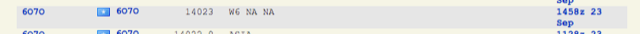

Yes, and here’s the self-spot from DXWatch:  That’s the exact frequency where I heard him (and yes, I agree it’s poor practice because the frequency was NOT clear). I “worked” him about 15 minutes later. He now denies being on the air at that time. Rich KE1B |